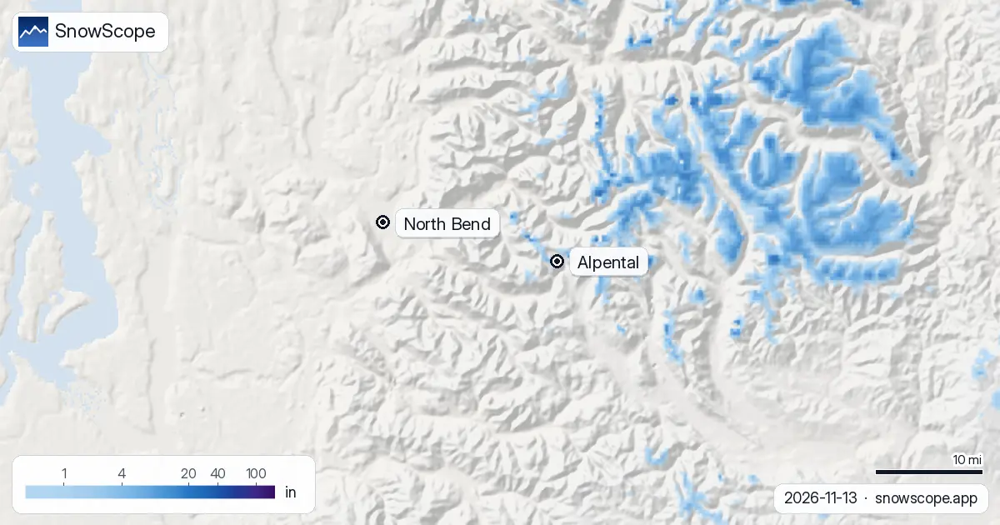

Alpental snow forecast: the rain/snow line sits at the summit (13 November 2026)
At Alpental the forecast is not really about inches. It is about one line on the mountain. This weekend the snow level sits at about 5,400 to 5,600 ft, and the top of the ski area is at 5,400 ft. That means rain at the base, rain at mid-mountain, and a coin toss at the summit. On our snow map the upper mountain has about 1 in (2 cm) on the ground today; the rest of Alpental is bare.
See the live snow forecast for Alpental in the SnowScope appSnow depth, powder alerts and the 3D map, free.
Climbing the mountain, line by line
Alpental is the steep, expert-leaning side of Snoqualmie Pass, the closest big-mountain skiing to Seattle. On our mapping it has 9 mi (14 km) of runs and 6 lifts, from 3,100 ft at the base to 5,400 ft at the top, a climb of about 2,300 ft. In early winter almost all of that height sits in the band where Cascade storms switch between rain and snow.
Today, the base at 3,100 ft and mid-mountain at 4,300 ft are bare. The top has 0.8 in (2 cm), what is left of about 1.6 in (4 cm) that fell in the past week.

This weekend: rain nearly to the top
The weekend storm is a warm one. The forecasts we check put the snow level between about 5,400 and 5,600 ft, at or just above the summit. At the base every drop should be rain. At mid-mountain about nine tenths of it should be rain. Even at the top more than a third may come as rain, and our own number for new snow there is just 0.4 in (1 cm).
So if you were hoping for a first Alpental day this weekend, it is not this storm. Rain on the existing thin cover will mostly wash it away below the ridge.
Next week: the line slips down, a little
Over the full seven days the snow level comes down to about 5,000 to 5,200 ft. That is still above most of the ski area, so expect mixed rain and snow. Our week totals give 4 to 5 in (9 to 12 cm) at the top, 3 in (8 cm) at mid-mountain, most of it wet, and 2 in (4 cm) at the base, where nine tenths of what falls should still be rain.
Watch the snow level, not the snow totals. When a forecast drops the line below the base, about 3,100 ft, the whole of Alpental starts to build. Until then, only the upper bowls gain.
Why the line matters so much here
Our 46 past winters (1980-81 to 2025-26) show the gap between top and bottom. In the middle winter the first lasting snow reaches the top around 19 October, mid-mountain around 26 October, and the base around 13 November, which is today. A usual November holds 20 in (50 cm) at the top, 10 in (26 cm) at mid-mountain and 2 in (4 cm) at the base; in one November out of ten the top has only 4 in, in another 46 in.
December changes the picture, with 70 in (179 cm) at the top, 42 in (107 cm) at mid-mountain and 13 in (34 cm) at the base in a usual year. Over a whole winter mid-mountain peaks at 127 in (322 cm), more than three times the base's 40 in (101 cm). That is the rain line at work, all season long.
A snowpack that has held up
One encouraging point: Alpental's snow has not shrunk in our record. The middle peak at mid-mountain was 119 in (302 cm) in the first 15 winters and 127 in (323 cm) in the last 15; at the base, 38 in (96 cm) then 40 in (102 cm). Last winter the top reached 193 in (491 cm) with 197 days of snow, a little under the usual 230. The snow comes late at the bottom, but it still comes.
Tips for skiers
- Before driving up from Seattle, check the pass report for chains and traction rules.
- In mixed weather, a cold and dry night after the rain makes the snow hard and icy: early-season edges matter.
- Alpental's terrain is avalanche terrain. Read the Northwest Avalanche Center forecast for Snoqualmie Pass before any uphill or backcountry skiing.
More maps (external sites)
References and credits
- The Summit at Snoqualmie, official site (Alpental lifts, opening, snow report) www.summitatsnoqualmie.com/
- Northwest Avalanche Center, Snoqualmie Pass forecasts nwac.us/
About these numbers
Snow numbers: the SnowScope snow model, run of 12 November 2026, at three heights of the ski area (values for the area, not the ski area's snow stake), and our snow history, 46 past winters (1980-81 to 2025-26), a model of the past corrected for height. Inches and feet are rounded from metric values. Snow level, rain share and the range at the top: independent weather forecasts and the official US forecast read at the same heights, the check every SnowScope post passes before it goes out. Run length and lift count: OpenSkiMap mapping. Forecasts change: look at the map before you go.
Official avalanche bulletins: avalanche.org (US national portal)
Cite this report
For research, teaching or the press: the numbers and charts are free to reuse under CC BY 4.0 with this citation.
SnowScope (2026), Alpental snow forecast: the rain/snow line sits at the summit (13 November 2026), https://snowscope.app/blog/en/2026/11/alpental-snow-forecast-snoqualmie-pass-13-november-2026.html, accessed 2026-11-13
SnowScope (Atlas Labs). (2026, November 13). Alpental snow forecast: the rain/snow line sits at the summit (13 November 2026). SnowScope snow reports. https://snowscope.app/blog/en/2026/11/alpental-snow-forecast-snoqualmie-pass-13-november-2026.html
BibTeX
@misc{snowscope2026alpentalsnowforecastsnoq,
author = {{SnowScope (Atlas Labs)}},
title = {Alpental snow forecast: the rain/snow line sits at the summit (13 November 2026)},
year = {2026},
month = nov,
howpublished = {\url{https://snowscope.app/blog/en/2026/11/alpental-snow-forecast-snoqualmie-pass-13-november-2026.html}},
note = {Published 2026-11-13 16:32 UTC; accessed 2026-11-13}
}· CC BY 4.0 · Methods, data and tools →
Alpental: snow and temperature by height, this winter vs last (tools) →
Follow Alpental
Free: a message when fresh snow is coming, and the forecast every morning.
More snow reports

Getting to Snowbird in winter: one canyon road (SR-210), Utah's traction law, the UTA ski bus and the drive from Salt Lake City airport.

Driving to Palisades Tahoe in winter: distances from Reno, California chain controls R-1 to R-3, weekend parking reservations, free TART buses.

Our two-week maps show where new snow should fall in the US West between 13 November and 26 November, from the two global models that reach two …